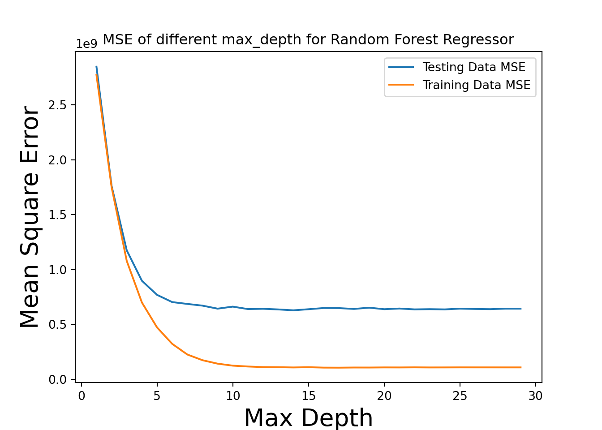
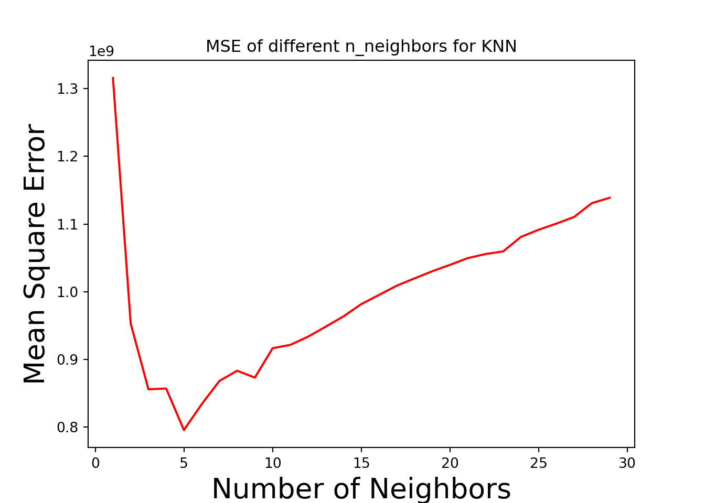

In order to complete the model training step, we will follow the following steps from class:
Define your Model Class
Define the Cost Function
Perform Optimization
Check the Performance of Fitted Model
We know that our output will be a number so we will use some type of regression model. Let’s try out a few regression models
import sklearn
import pandas as pd
from sklearn.model_selection import train_test_split
from sklearn.linear_model import LinearRegression
from sklearn.preprocessing import StandardScaler, OneHotEncoder
from sklearn.compose import make_column_transformer
from sklearn.metrics import mean_squared_error
import matplotlib.pyplot as plt
import matplotlib
import numpy as np
matplotlib.use('Agg')df = pd.read_csv('clean_train.csv')
# create a scaler object
std_scaler = StandardScaler()
# fit and transform the data
numeric_cols = list(df.select_dtypes(include=['int64','float64']).columns)
# Remove SalePrice from the values to be normalized
numeric_cols.remove("SalePrice")
print(df[numeric_cols])
# Normalize all numeric values## Id LotFrontage LotArea LotShape ... PoolQC Fence MiscVal YrSold
## 0 1 65.0 8450 0 ... 0 0 0 2008
## 1 2 80.0 9600 0 ... 0 0 0 2007
## 2 3 68.0 11250 1 ... 0 0 0 2008
## 3 4 60.0 9550 1 ... 0 0 0 2006
## 4 5 84.0 14260 1 ... 0 0 0 2008
## ... ... ... ... ... ... ... ... ... ...
## 1451 1456 62.0 7917 0 ... 0 0 0 2007
## 1452 1457 85.0 13175 0 ... 0 3 0 2010
## 1453 1458 66.0 9042 0 ... 0 4 2500 2010
## 1454 1459 68.0 9717 0 ... 0 0 0 2010
## 1455 1460 75.0 9937 0 ... 0 0 0 2008
##
## [1456 rows x 57 columns]df[numeric_cols] = pd.DataFrame(std_scaler.fit_transform(df[numeric_cols]),
columns=numeric_cols)
print(df[numeric_cols])## Id LotFrontage LotArea ... Fence MiscVal YrSold
## 0 -1.729139 -0.203664 -0.202770 ... -0.469568 -0.088475 0.137472
## 1 -1.726767 0.447241 -0.086107 ... -0.469568 -0.088475 -0.615009
## 2 -1.724395 -0.073483 0.081281 ... -0.469568 -0.088475 0.137472
## 3 -1.722023 -0.420632 -0.091179 ... -0.469568 -0.088475 -1.367490
## 4 -1.719651 0.620816 0.386636 ... -0.469568 -0.088475 0.137472
## ... ... ... ... ... ... ... ...
## 1451 1.722179 -0.333845 -0.256842 ... -0.469568 -0.088475 -0.615009
## 1452 1.724551 0.664209 0.276566 ... 2.022622 -0.088475 1.642435
## 1453 1.726923 -0.160270 -0.142714 ... 2.853352 4.944023 1.642435
## 1454 1.729295 -0.073483 -0.074237 ... -0.469568 -0.088475 1.642435
## 1455 1.731667 0.230273 -0.051919 ... -0.469568 -0.088475 0.137472
##
## [1456 rows x 57 columns]
# Create dummy variable columns for the categorical variables
categorical_columns = df.select_dtypes(include=['object','bool']).columns
print(df['GarageType'])## 0 Attchd
## 1 Attchd
## 2 Attchd
## 3 Detchd
## 4 Attchd
## ...
## 1451 Attchd
## 1452 Attchd
## 1453 Attchd
## 1454 Attchd
## 1455 Attchd
## Name: GarageType, Length: 1456, dtype: objectfor column in categorical_columns:
# Print out the column names
print(f"column {column}: ",df[column].unique())
dummies = pd.get_dummies(df[column]).rename(columns= lambda x: column +'_' + str(x))
df = pd.concat([df, dummies], axis=1)
df = df.drop([column], axis=1)## column MSSubClass: ['2-STORY 1946+' '1-STORY 1946+' '2-STORY 1945-' '1-1/2 STORY FIN'
## '2 FAMILY CONVERSION' '1-1/2 STORY UNF' 'DUPLEX' '1-STORY PUD 1946+'
## '1-STORY 1945-' 'SPLIT FOYER' 'SPLIT OR MULTI-LEVEL' '2-STORY PUD 1946+'
## '2-1/2 STORY' 'MULTILEVEL PUD' '1-STORY W/ ATTIC']
## column MSZoning: ['RL' 'RM' 'C' 'FV' 'RH']
## column Street: ['Pave' 'Grvl']
## column Alley: [nan 'Grvl' 'Pave']
## column LandContour: ['Lvl' 'Bnk' 'Low' 'HLS']
## column LotConfig: ['Inside' 'FR2' 'Corner' 'CulDSac' 'FR3']
## column Neighborhood: ['CollgCr' 'Veenker' 'Crawfor' 'NoRidge' 'Mitchel' 'Somerst' 'NWAmes'
## 'OldTown' 'BrkSide' 'Sawyer' 'NridgHt' 'NAmes' 'SawyerW' 'IDOTRR'
## 'MeadowV' 'Edwards' 'Timber' 'Gilbert' 'StoneBr' 'ClearCr' 'NPkVill'
## 'Blmngtn' 'BrDale' 'SWISU' 'Blueste']
## column Condition1: ['Norm' 'Feedr' 'PosN' 'Artery' 'RRAe' 'RRNn' 'RRAn' 'PosA' 'RRNe']
## column Condition2: ['Norm' 'Artery' 'RRNn' 'Feedr' 'PosA' 'PosN' 'RRAn' 'RRAe']
## column BldgType: ['1Fam' '2fmCon' 'Duplex' 'TwnhsE' 'Twnhs']
## column HouseStyle: ['2Story' '1Story' '1.5Fin' '1.5Unf' 'SFoyer' 'SLvl' '2.5Unf' '2.5Fin']
## column RoofStyle: ['Gable' 'Hip' 'Gambrel' 'Mansard' 'Flat' 'Shed']
## column RoofMatl: ['CompShg' 'WdShngl' 'Metal' 'WdShake' 'Membran' 'Tar&Grv' 'Roll']
## column Exterior1st: ['VinylSd' 'MetalSd' 'Wd Sdng' 'HdBoard' 'BrkFace' 'WdShing' 'CemntBd'
## 'Plywood' 'AsbShng' 'Stucco' 'BrkComm' 'AsphShn' 'Stone' 'ImStucc'
## 'CBlock']
## column Exterior2nd: ['VinylSd' 'MetalSd' 'WdShing' 'HdBoard' 'Plywood' 'Wd Sdng' 'CmentBd'
## 'BrkFace' 'Stucco' 'AsbShng' 'BrkComm' 'ImStucc' 'AsphShn' 'Stone'
## 'Other' 'CBlock']
## column MasVnrType: ['BrkFace' 'None' 'Stone' 'BrkCmn']
## column Foundation: ['PConc' 'CBlock' 'BrkTil' 'Wood' 'Slab' 'Stone']
## column Heating: ['GasA' 'GasW' 'Grav' 'Wall' 'OthW' 'Floor']
## column GarageType: ['Attchd' 'Detchd' 'BuiltIn' 'CarPort' nan 'Basment' '2Types']
## column MiscFeature: [nan 'Shed' 'Gar2' 'Othr' 'TenC']
## column MoSold: ['Feb' 'May' 'Sept' 'Dec' 'Oct' 'Aug' 'Nov' 'Apr' 'Jan' 'July' 'Mar'
## 'June']
## column SaleType: ['WD' 'New' 'COD' 'ConLD' 'ConLI' 'CWD' 'ConLw' 'Con' 'Oth']
## column SaleCondition: ['Normal' 'Abnorml' 'Partial' 'AdjLand' 'Alloca' 'Family']print(df.columns)## Index(['Id', 'LotFrontage', 'LotArea', 'LotShape', 'Utilities', 'LandSlope',
## 'OverallQual', 'OverallCond', 'YearBuilt', 'YearRemodAdd',
## ...
## 'SaleType_ConLw', 'SaleType_New', 'SaleType_Oth', 'SaleType_WD',
## 'SaleCondition_Abnorml', 'SaleCondition_AdjLand',
## 'SaleCondition_Alloca', 'SaleCondition_Family', 'SaleCondition_Normal',
## 'SaleCondition_Partial'],
## dtype='object', length=243)print(df[['GarageType_Attchd', 'GarageType_Detchd']])
## GarageType_Attchd GarageType_Detchd
## 0 1 0
## 1 1 0
## 2 1 0
## 3 0 1
## 4 1 0
## ... ... ...
## 1451 1 0
## 1452 1 0
## 1453 1 0
## 1454 1 0
## 1455 1 0
##
## [1456 rows x 2 columns]rows1 = df.shape[0]
df.dropna(inplace=True)
rows2 = df.shape[0]
print(f"""
Rows before: {rows1}
Rows after: {rows2}
-----------------------------
Rows dropped: {rows1 - rows2}
""")##
## Rows before: 1456
## Rows after: 1197
## -----------------------------
## Rows dropped: 259
# Create dataframes for independent and dependent variables
# Dependent variable
y = df['SalePrice']
# Independent Variable
X = df.drop('SalePrice', axis=1)
# Create training and test sets. Test is .25 of data
(X_train, X_test, y_train, y_test) = train_test_split(X, y, test_size=.25, random_state=123)from sklearn.ensemble import RandomForestRegressor
rf_mses = []
rf_training_mses = []
max_depths = []
for d in range(1,30):
rf_regr = RandomForestRegressor(max_depth=d, random_state=0)
# Fit the data to the model
rf_regr.fit(X_train, y_train)
# Make predictions on test data
rf_y_pred = rf_regr.predict(X_test)
rf_y_training_pred = rf_regr.predict(X_train)
# Report Mean Square Error
rf_mses.append(mean_squared_error(y_test, rf_y_pred))
rf_training_mses.append(mean_squared_error(y_train, rf_y_training_pred))
max_depths.append(d)
#print(f"Mean Squared Error: {rf_mses[-1]}")## RandomForestRegressor(max_depth=1, random_state=0)
## RandomForestRegressor(max_depth=2, random_state=0)
## RandomForestRegressor(max_depth=3, random_state=0)
## RandomForestRegressor(max_depth=4, random_state=0)
## RandomForestRegressor(max_depth=5, random_state=0)
## RandomForestRegressor(max_depth=6, random_state=0)
## RandomForestRegressor(max_depth=7, random_state=0)
## RandomForestRegressor(max_depth=8, random_state=0)
## RandomForestRegressor(max_depth=9, random_state=0)
## RandomForestRegressor(max_depth=10, random_state=0)
## RandomForestRegressor(max_depth=11, random_state=0)
## RandomForestRegressor(max_depth=12, random_state=0)
## RandomForestRegressor(max_depth=13, random_state=0)
## RandomForestRegressor(max_depth=14, random_state=0)
## RandomForestRegressor(max_depth=15, random_state=0)
## RandomForestRegressor(max_depth=16, random_state=0)
## RandomForestRegressor(max_depth=17, random_state=0)
## RandomForestRegressor(max_depth=18, random_state=0)
## RandomForestRegressor(max_depth=19, random_state=0)
## RandomForestRegressor(max_depth=20, random_state=0)
## RandomForestRegressor(max_depth=21, random_state=0)
## RandomForestRegressor(max_depth=22, random_state=0)
## RandomForestRegressor(max_depth=23, random_state=0)
## RandomForestRegressor(max_depth=24, random_state=0)
## RandomForestRegressor(max_depth=25, random_state=0)
## RandomForestRegressor(max_depth=26, random_state=0)
## RandomForestRegressor(max_depth=27, random_state=0)
## RandomForestRegressor(max_depth=28, random_state=0)
## RandomForestRegressor(max_depth=29, random_state=0)best_n = max_depths[rf_mses.index(min(rf_mses))]
rf_mse = min(rf_mses)
print(f"Best MSE of {rf_mse} at max_depth of {best_n}")## Best MSE of 627261421.4452841 at max_depth of 20import matplotlib.pyplot as plt
plt.close()
plt.plot(max_depths, rf_mses)
plt.plot(max_depths, rf_training_mses)
plt.title('MSE of different max_depth for Random Forest Regressor')
plt.xlabel('Max Depth', size=20)
plt.ylabel('Mean Square Error', size=20)
plt.legend(['Testing Data MSE',"Training Data MSE"])
plt.show()
# Now that we know the best n, train again
rf_regr = RandomForestRegressor(max_depth=best_n, random_state=0)
# Fit the data to the model
rf_regr.fit(X_train, y_train)
# Make predictions on test data## RandomForestRegressor(max_depth=20, random_state=0)rf_y_pred = rf_regr.predict(X_test)Our model class is scikit-learn’s random forest regressor. The model class works by building decision trees on different sub-samples of the data and uses averaging to improve the predictive accuracy. More information abou the model can be found Here
The cost function used for our random forest regressor is mean squared error. We chose this because it only slightly penalizes the model for being slightly off, but greatly penalizes the model when it is off a greater amount.
We optimized the performance of our model by trying different max-depths for the random forest model. This helped us avoid over fitting. We went with a model that would minimize the mean square error of the model
The performance of the model is checked below:
rf_mse = mean_squared_error(y_test, rf_y_pred)
print(f"Mean Squared Error: {rf_mse}")## Mean Squared Error: 627261421.4452841max_val = max(max(y_test),max(rf_y_pred))
plt.close()
plt.plot([0.0, max_val], [0.0, max_val], 'k')
plt.plot(rf_y_pred, y_test, '.y')
plt.xlabel('Random Forest Regressor Predicted Sales Price ($)', size=20)
plt.ylabel('True Sales Price ($)', size=20)
plt.title(f'Random Forest Regressor Diagnosis Plot (max_depth={best_n})')
plt.show()
# Report Mean Square Errorprint(f"Random Forest RMSE: {rf_mse:,}")## Random Forest RMSE: 627,261,421.4452841print(f"Random Forest R^2: {rf_regr.score(X_test, y_test)}")## Random Forest R^2: 0.9053810176351551# Train a linear model
lin_regr = LinearRegression(fit_intercept=False)
lin_regr.fit(X_train, y_train)
# Make predictions on test data## LinearRegression(fit_intercept=False)lin_y_pred = lin_regr.predict(X_test)
lin_mse = mean_squared_error(y_test, lin_y_pred)import statsmodels.api as sm
from scipy import stats
X2 = sm.add_constant(X_train)
est = sm.OLS(y_train, X2)
lin_regr = est.fit()
#print(lin_regr.summary())
lin_y_pred = lin_regr.predict(X_test)
lin_mse = mean_squared_error(y_test, lin_y_pred)
print(lin_mse)## 915059405.4317662print(lin_regr.rsquared)## 0.9361021808498309max_val = max(max(y_test),max(lin_y_pred))
plt.close()
plt.plot([0.0, max_val], [0.0, max_val], 'k')
plt.plot(lin_y_pred, y_test, '.r')
plt.xlabel('Linear Model Predicted Sales Price ($)', size=20)
plt.ylabel('True Sales Price ($)', size=20)
plt.title('Linear Model Diagnosis Plot')
plt.legend(['Perfect fit line',"Linear Model"])
plt.show()print(f"Linear MSE: {lin_mse:,}")## Linear MSE: 915,059,405.4317662print(f"Linear Reg R^2: {lin_regr.rsquared}")## Linear Reg R^2: 0.9361021808498309from sklearn.neighbors import KNeighborsRegressor
knn_mses = []
nums_neighbors = []
for k in range(1,30):
knn_regr = KNeighborsRegressor(
n_neighbors=k,
weights="distance"
)
# Fit the data to the model
knn_regr.fit(X_train, y_train)
# Make predictions on test data
knn_y_pred = knn_regr.predict(X_test)
# Report Mean Square Error
knn_mses.append(mean_squared_error(y_test, knn_y_pred))
nums_neighbors.append(k)
#print(f"Mean Squared Error: {knn_mses[-1]}")## KNeighborsRegressor(n_neighbors=1, weights='distance')
## KNeighborsRegressor(n_neighbors=2, weights='distance')
## KNeighborsRegressor(n_neighbors=3, weights='distance')
## KNeighborsRegressor(n_neighbors=4, weights='distance')
## KNeighborsRegressor(weights='distance')
## KNeighborsRegressor(n_neighbors=6, weights='distance')
## KNeighborsRegressor(n_neighbors=7, weights='distance')
## KNeighborsRegressor(n_neighbors=8, weights='distance')
## KNeighborsRegressor(n_neighbors=9, weights='distance')
## KNeighborsRegressor(n_neighbors=10, weights='distance')
## KNeighborsRegressor(n_neighbors=11, weights='distance')
## KNeighborsRegressor(n_neighbors=12, weights='distance')
## KNeighborsRegressor(n_neighbors=13, weights='distance')
## KNeighborsRegressor(n_neighbors=14, weights='distance')
## KNeighborsRegressor(n_neighbors=15, weights='distance')
## KNeighborsRegressor(n_neighbors=16, weights='distance')
## KNeighborsRegressor(n_neighbors=17, weights='distance')
## KNeighborsRegressor(n_neighbors=18, weights='distance')
## KNeighborsRegressor(n_neighbors=19, weights='distance')
## KNeighborsRegressor(n_neighbors=20, weights='distance')
## KNeighborsRegressor(n_neighbors=21, weights='distance')
## KNeighborsRegressor(n_neighbors=22, weights='distance')
## KNeighborsRegressor(n_neighbors=23, weights='distance')
## KNeighborsRegressor(n_neighbors=24, weights='distance')
## KNeighborsRegressor(n_neighbors=25, weights='distance')
## KNeighborsRegressor(n_neighbors=26, weights='distance')
## KNeighborsRegressor(n_neighbors=27, weights='distance')
## KNeighborsRegressor(n_neighbors=28, weights='distance')
## KNeighborsRegressor(n_neighbors=29, weights='distance')best_k = nums_neighbors[knn_mses.index(min(knn_mses))]
knn_mse = min(knn_mses)
print(f"Best MSE of {knn_mse} at n_neighbors of {best_k}")## Best MSE of 776224614.0781039 at n_neighbors of 5plt.close()
plt.plot(nums_neighbors, knn_mses, c="red")
plt.title('MSE of different n_neighbors for KNN')
plt.xlabel('Number of Neighbors', size=20)
plt.ylabel('Mean Square Error', size=20)
plt.rcParams["figure.autolayout"] = True
plt.show()
# Now that we know the best n, train again
knn_regr = KNeighborsRegressor(
n_neighbors=best_k,
weights="distance"
)
# Fit the data to the model
knn_regr.fit(X_train, y_train)
# Make predictions on test data## KNeighborsRegressor(weights='distance')knn_y_pred = knn_regr.predict(X_test)
Our model class is scikit-learn’s K-nearest neighbors regressor. The model class works by basically memorizing a list of points for comparing future points to - these future points are compared to the k nearest neighbors and take the weighted average of their values (weights are determined by distance). More information abou the model can be found Here
KNN does not exactly have a cost function - instead, the KNN model basically just memorizes the locations of the training dataset and compares future prediction points to the points the model was trained on. The model then chooses the weighted average of the k-closest points
We optimized the performance of our model by trying different numbers of neighbors (k) for the KNN model. This helped us determine which K values would be best for our model.
The performance of the model is checked below:
plt.close()
max_val = max(max(y_test),max(knn_y_pred))
plt.plot([0.0, max_val], [0.0, max_val], 'k')
plt.plot(knn_y_pred, y_test, '.b')
plt.xlabel('KNN Model Predicted Sales Price ($)', size=20)
plt.ylabel('True Sales Price ($)', size=20)
plt.title(f'KNN Regressor Diagnosis Plot (neighbors={best_k})')
plt.legend(['Perfect fit line',"KNN Model"])
plt.show()
# Report Mean Square Errorprint(f"MSE of KNN: {mean_squared_error(y_test, knn_y_pred)}")## MSE of KNN: 776224614.0781039print(f"KNN R^2 score: {knn_regr.score(X_test, y_test)}")## KNN R^2 score: 0.8829107281914653from sklearn.neural_network import MLPRegressor
vals = []
combos = []
mlp_regr = MLPRegressor(random_state=1,
max_iter=500,
hidden_layer_sizes=(100,30,8),
learning_rate="constant", # {‘constant’, ‘invscaling’, ‘adaptive’}
alpha=10**-6, # default =0.0001
solver="adam",
batch_size=200
).fit(X_train, y_train)## /stor/home/dcd2287/.local/lib/python3.6/site-packages/sklearn/neural_network/_multilayer_perceptron.py:617: ConvergenceWarning: Stochastic Optimizer: Maximum iterations (500) reached and the optimization hasn't converged yet.
## % self.max_iter, ConvergenceWarning)MLP_y_pred = mlp_regr.predict(X_test)
print(mlp_regr.score(X_test, y_test))## 0.9190756873516708Our model class is scikit-learn’s MLP. The model works by creating and training a neural network in epochs. We trained parameters More information about the model can be found Here
The cost function in the neural network minimizes the squared error using the “adam” stochastic gradient-based optimizer
We tried to optimize the performance of the neural network by trying different hyperparameters for the model and keeping the new hyperparameters if the squared error improved.
The performance of the model is checked below:
plt.close()
max_val = max(max(y_test),max(MLP_y_pred))
plt.plot([0.0, max_val], [0.0, max_val], 'k')
plt.plot(MLP_y_pred, y_test, '.g')
plt.xlabel('Neural Network Model Predicted Sales Price ($)', size=20)
plt.ylabel('True Sales Price (%)', size=20)
plt.title('Neural Network Model Diagnosis Plot')
plt.legend(['Perfect fit line',"Neural Network Model"])
plt.show()
# Report Mean Square Errorprint(f"MSE of Neural Network: {mean_squared_error(y_test, MLP_y_pred)}")## MSE of Neural Network: 536474797.26154166print(f"Neural Network R^2 score: {mlp_regr.score(X_test, y_test)}")## Neural Network R^2 score: 0.9190756873516708
lin_mse = mean_squared_error(y_test, lin_y_pred)
knn_mse = mean_squared_error(y_test, knn_y_pred)
rf_mse = mean_squared_error(y_test, rf_y_pred)
MLP_mse = mean_squared_error(y_test, MLP_y_pred)
max_val = max(
max(y_test),
max(MLP_y_pred),
max(rf_y_pred),
max(knn_y_pred)
)
plt.close()
plt.xlim([0, max_val])## (0.0, 582933.0)plt.xlim([0, max_val])## (0.0, 582933.0)plt.plot([0.0, max_val], [0.0, max_val], 'k')
plt.plot(lin_y_pred, y_test, '.r',alpha=0.3)
plt.plot(knn_y_pred, y_test, '.b',alpha=0.3)
plt.plot(rf_y_pred, y_test, '.y',alpha=0.3)
plt.plot(MLP_y_pred, y_test, '.g',alpha=0.3)
# apply legend()
plt.xlabel('Model Predicted Sales Price ($)', size=20)
plt.ylabel('True Sales Price ($)', size=20)
plt.title('Model Diagnosis Plot (all models)')
plt.legend(['Perfect fit line',"Linear Model",f"KNN Model k={best_k}",f"RF Model md={best_n}", "Neural Network Model"])
plt.show()print(f"""
MSEs (Mean Square Errors)---------------
Linear Reg: {lin_mse:,}
KNN Reg: {knn_mse:,}
Random Forest Reg: {rf_mse:,}
Neural Network Reg: {MLP_mse:,}
R^2 Scores---------------
Linear Reg: {lin_regr.rsquared}
KNN Reg: {knn_regr.score(X_test, y_test)}
Random Forest Reg: {rf_regr.score(X_test, y_test)}
Neural Network Reg: {mlp_regr.score(X_test, y_test)}""")##
## MSEs (Mean Square Errors)---------------
## Linear Reg: 915,059,405.4317662
## KNN Reg: 776,224,614.0781039
## Random Forest Reg: 627,261,421.4452841
## Neural Network Reg: 536,474,797.26154166
## R^2 Scores---------------
## Linear Reg: 0.9361021808498309
## KNN Reg: 0.8829107281914653
## Random Forest Reg: 0.9053810176351551
## Neural Network Reg: 0.9190756873516708Based on the R^2 and MSE values of the models when test data is applied to them,